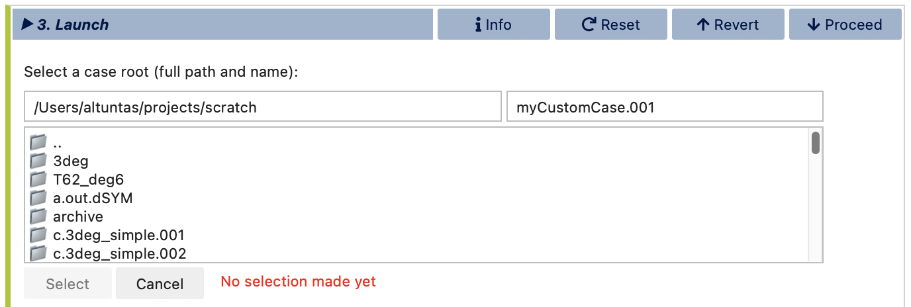
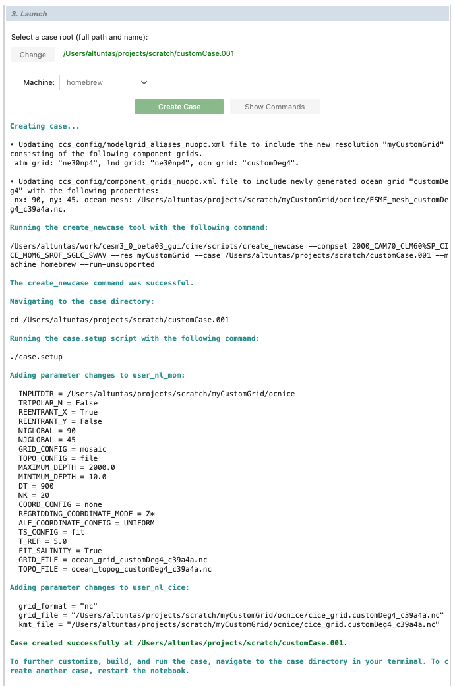

Stage 3/3: Launch
The final main stage of visualCaseGen is the Launch stage, where you bring your CESM case to life with the selected compset and grid configuration. In this stage, you’ll find tools to select the case directory, choose a target machine, and initiate case creation.

Chosing the case directory
To begin, open the file browser widget by clicking the Select button to set the directory for the new case. Navigate to your desired location, then enter a unique name for the case in the text box at the top right of the browser. Click Select to confirm your directory and case name.
Selecting the target machine
Next, choose the machine where the case will run. If CESM has already been ported to the machine, this selection should populate automatically. If not, confirm that CESM is properly ported to the machine you intend to use and that the correct machine is selected. For some systems, a PROJECT ID is required; if so, you’ll be prompted to enter it here.
Note
If you’re using a machine that shares a file system with another, you have the flexibility to select a different machine for running the case. For example, if you are working within visualCaseGen on casper but intend to run the case on derecho, simply change the machine selection to derecho at this stage. This allows you to configure the case on one machine while specifying execution on another within the shared system environment.
Creating the case
When all selections are finalized, you can click Create Case to initiate case creation or Show Commands to view the terminal commands that will be executed. Below, you’ll see an example of the interface after clicking Create Case. Notice how visualCaseGen handles the case setup process, including modifying CESM XML files, executing the create_newcase tool, running the case.setup script, and applying any XML and namelist changes needed.
The completion log provides confirmation of a successful case creation, including the path to the new case directory, where you can proceed with case customization, building, and execution.
Congratulations!
You’ve successfully created a CESM case using visualCaseGen, bringing together the models, grid, and configurations tailored to your scientific goals. With the case directory set up, you’re ready to move forward with any additional customizations, building, and executing your case. Great job, and happy modeling!